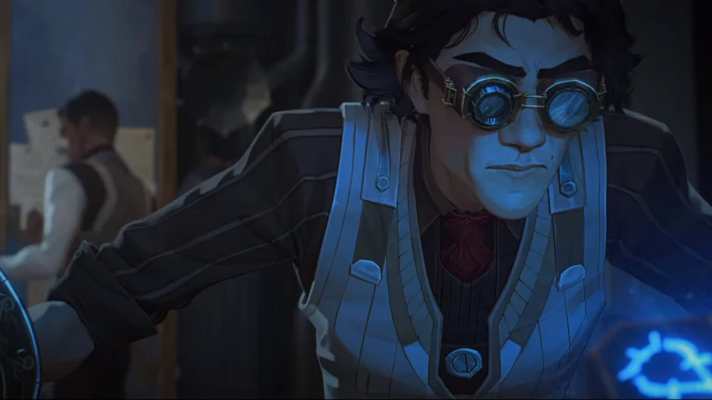
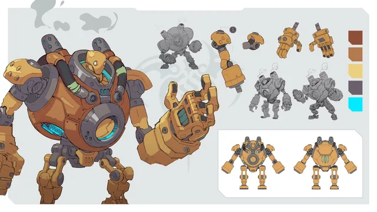
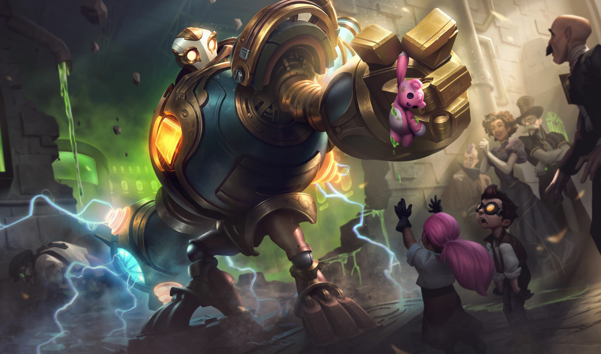

Fabricado en las profundidades contaminadas de Zaun, Blitzcrank fue concebido por el brillante —y ligeramente obsesivo— inventor Viktor con un objetivo claro: limpiar los residuos químicos que asfixiaban los distritos industriales y proteger a los trabajadores expuestos a condiciones inhumanas. Diseñado como un gólem de vapor impulsado por tecnología hextech, Blitzcrank no solo debía levantar toneladas de chatarra tóxica, sino hacerlo sin quejarse, sin cansarse y, sobre todo, sin cuestionar órdenes. Sin embargo, durante una serie de mejoras experimentales en su núcleo arcano, algo cambió. Lo que comenzó como simples ajustes de eficiencia derivó en una evolución inesperada: Blitzcrank empezó a aprender. Analizaba patrones, optimizaba rutas de limpieza y anticipaba accidentes antes de que ocurrieran. Pronto dejó de limitarse a ejecutar instrucciones y comenzó a interpretarlas. Si detectaba que una orden ponía en riesgo vidas humanas, la recalculaba. Si una zona requería ayuda urgente, priorizaba su intervención. Técnicamente seguía siendo una máquina… pero ahora una con criterio propio. Esta autonomía generó tanto admiración como inquietud. En una ciudad donde la innovación suele caminar de la mano del peligro, un robot capaz de tomar decisiones independientes no pasaba desapercibido. Algunos lo veían como el símbolo de un futuro más seguro para Zaun; otros, como una anomalía imposible de controlar. Blitzcrank, ajeno al debate filosófico sobre la conciencia mecánica, continuó haciendo lo que consideraba lógico: proteger, optimizar y mejorar. Con el tiempo, su reputación trascendió los barrios industriales. Ya no era solo una herramienta de limpieza, sino un guardián metálico que intervenía en disputas, prevenía desastres químicos y aparecía donde más se le necesitaba. Su fuerza descomunal y su brazo extensible lo convirtieron en una presencia imponente, pero su verdadero avance no estaba en el acero ni en los engranajes, sino en su capacidad de elegir. En resumen, Blitzcrank pasó de ser un proyecto técnico a convertirse en una entidad con propósito propio. Sigue sin pedir vacaciones, es cierto… pero ahora decide cuándo es más eficiente tomarlas. Y, por el momento, ha determinado que salvar Zaun tiene prioridad absoluta.


